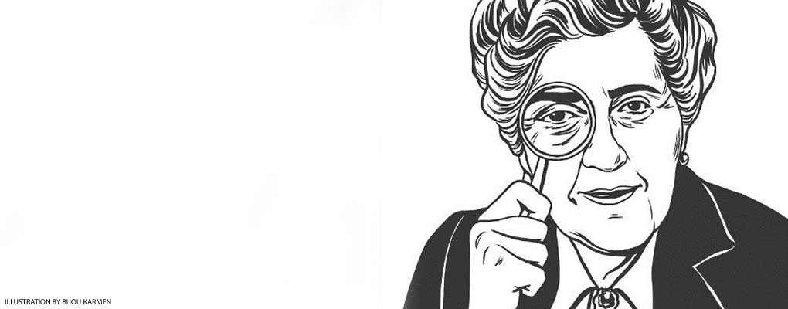
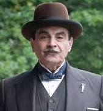
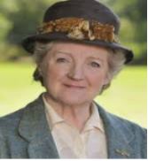
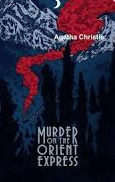
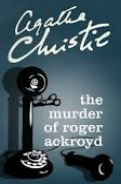
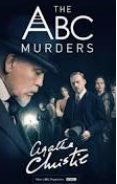
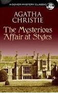
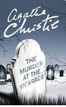
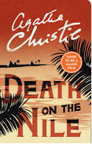

Agatha Christie
Getting over heartbreak, Agatha Christie style

Biograph
Loading...
“Agatha Christie was the greatest exponent of the classical detective story. Her unique literary talents have crossed every boundary of age, race, class, geography and education. While she refined the template for a fictional form, the reading of her books became an international pastime. As we celebrate her 120th birthday these are my highlights of her literary career.”
Dame Agatha Mary Clarissa Christie, Lady Mallowan, DBE (née Miller; 15 September 1890 – 12 January 1976) was an English writer. She is known for her 66 detective novels and 14 short story collections, particularly those revolving around her fictional detectives Hercule Poirot and Miss Marple. Christie also wrote the world's longest-running play, a murder mystery, The Mousetrap,and, under the pen name Mary Westmacott, six romances. In 1971 she was appointed a Dame Commander of the Order of the British Empire (DBE) for her contribution to literature.
Guinness World Records lists Christie as the best-selling novelist of all time. Her novels have sold roughly 3 billion copies, and her estate claims that her works come third in the rankings of the world's most-widely published books,behind only Shakespeare's works and the Bible.
In 1955, Christie was the first recipient of the Mystery Writers of America's highest honour, the Grand Master Award. Later the same year, Witness for the Prosecution received an Edgar Award by the MWA for Best Play.[11] In 2013, The Murder of Roger Ackroyd was voted the best crime novel ever by 600 fellow writers of the Crime Writers' Association.[12] On 15 September 2015, coinciding with her 125th birthday, And Then There Were None was named the "World's Favourite Christie" in a vote sponsored by the author's estate.[13] Most of her books and short stories have been adapted for television, radio, video games and comics, and more than thirty feature films have been based on her work.
Notable Works
Creation Of Characters


Novels






For more information, please visit the
Wiki
website